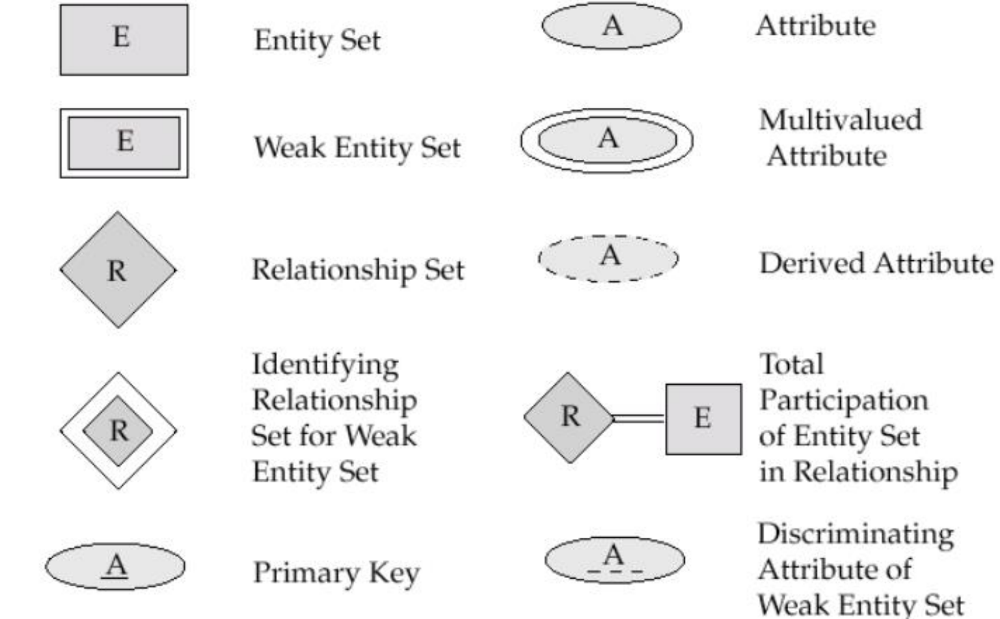
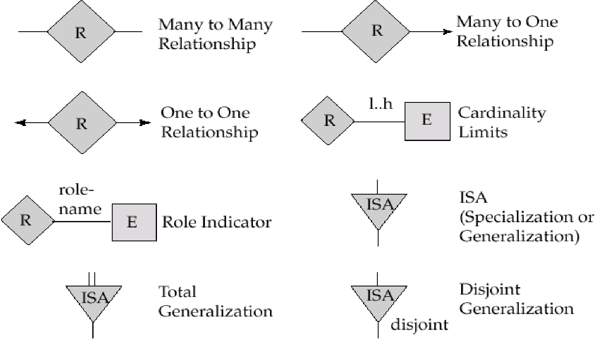
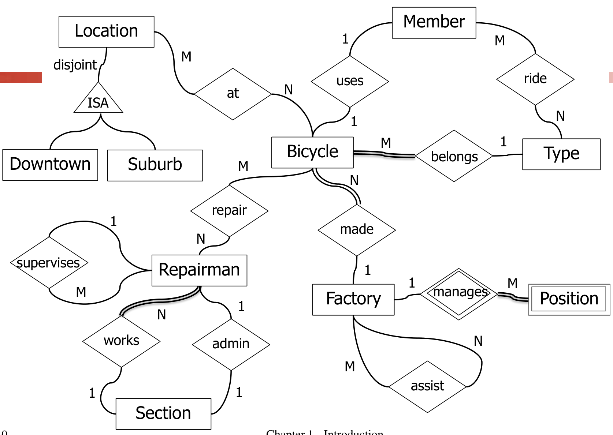
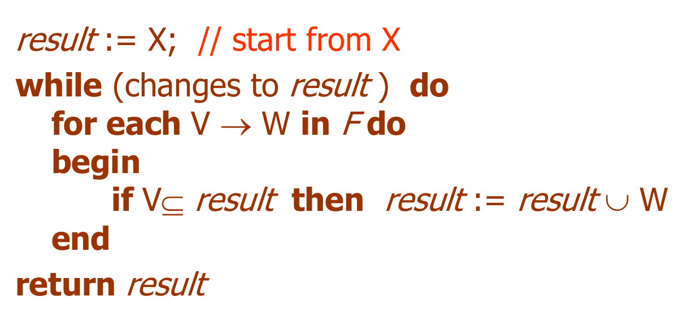

概念模型
概念模型中，具有：
- 实体 Entity
- 属性 Attribute
- 码 Key
- 域 Domain
- 实体类型 Entity Type
- 实体集合 Entity Set
- 关系 Relation
约束有：
- 基数约束
1:1，1:N，N:M
- 参与性约束
is-a 关系表明所属性，表示从一个实体“继承”到另一个实体。
Weak Entity Set
弱实体集表示一个实体必须依附于另一个实体，没有独立的主码，与强实体之间用标识关系相连，必须为
1:N 的关系。
E-R 图
图例：


示例：自行车的生产管理系统

E-R 图中的实体与实体间的码和函数依赖的关系
设一个关系，A-R-B，其中 A 的码为
Ka，B 的码为 Kb。
- 若这是一个
1:1的关系，那么Ka，Kb之间存在双向的函数依赖关系；Ka -> Kb：A的主码Ka唯一决定B的主码Kb。Kb -> Ka：B的主码Kb唯一决定A的主码Ka。
- 若这是一个
1:N的关系，假设A端为 1，B端为 N，那么存在Kb -> Ka的函数依赖；Kb -> Ka：B的主码Kb唯一决定A的主码Ka。Ka不能唯一决定Kb，因为一个B可以对应多个A。
- 若这是一个
N:M的关系，那么不存在函数依赖关系Ka不能唯一决定Kb，因为一个A可以对应多个B。Kb也不能唯一决定Ka，因为一个B可以对应多个A。
关系模型
关系模型中的数据结构：
- 关系（Relation）：指不能拆分的表。
- 元组（Tuple）：指表中的一行。
- 属性（Attribute）：指表中的一列。
- 码（Key）：唯一标识元组的属性。
- 域（Domain）：关系中每个属性的一组允许值。
- 关系实例（Relation Instance）：关系的一个具体实例。
- 关系模式（Relation Schema）：编程语言中类型定义的概念。
关系模型中有三个重要的约束：
- 实体完整性约束（Entity integrity）
- 含义：实体完整性约束要求关系表的每个元组（行）在其主码属性上必须有唯一的非空值。主码用于唯一标识表中的每一行，因此主码列不能包含空值或重复值。
- 例子：在学生表中，学号作为主码，必须唯一且不能为空。
- 参照完整性约束（Referential integrity）
- 含义：参照完整性约束要求外码值必须为空或与被引用表中的主码值相匹配。外码用于建立两个表之间的关系，确保引用的完整性。
- 例子：在选课表中，学生学号作为外码，必须在学生表中存在。
- 用户定义完整性约束（User-Defined integrity）
- 含义：用户定义完整性约束是由用户根据具体应用需求定义的约束条件，用于确保数据的正确性和一致性。这些约束可以是任意的业务规则。
- 例子：在员工表中，员工的年龄必须大于18岁。
关系代数
关系的定义
在域 \(D_1,D_2,\cdots,D_n\) 中，\(D_1\times D_2\times\cdots\times D_n\) 的任何子集称为关系，记作 \(R(D_1, D_2, \cdots, D_n)\)，其中 \(R\) 是关系的名称，\(n\) 是关系的目或度。
其中，任何子集包括了空集；\(\times\) 表示笛卡尔积，虽然笛卡尔积没有结合律，但是关系会忽略属性之间的顺序。
码的定义：
- 候选码（Candidiate Key）：如果关系中一个属性组的值可以唯一标识一个元组，则该属性组称为关系的候选码。
- 主码（Primary Key）：一个关系可以有多个候选码，其中一个被选为主码。
- 外码（Foreign Key）：外码是一个或多个属性的组合，这些属性引用另一个关系中的主码。外码用于建立两个关系之间的关联，确保引用的完整性。外码的值必须要么为空，要么与被引用关系中的主码值相匹配。
- 主属性（Primary Attribute），非主属性 （Non-Primary Attribute）：任何候选码中包含的属性是主属性，而其他属性是非主属性。
- 全码（All-key）：关系的所有属性是该关系的唯一候选码。
关系的六个基础性质：
- 列是同质的；
- 不同的列可以来自相同的域，每列是一个属性。不同的属性（列）应有不同的名称；
- 列的顺序可以交换；
- 任何两个元组不能相同；
- 行的顺序可以交换；
- 每个分量不能拆分。
简单记为：三列两行一分量。
关系的描述称为关系模式，记作 \(R(U, D, dom, F)\)，其中：
- \(R\)：关系的名称，
- \(U\)：关系中选定的属性名称，
- \(D\)：U 中包含的属性的域，
- \(dom\)：从属性到域的映射集合，
- \(F\)：属性之间的依赖关系集合。
关系的操作
传统的集合操作：并、交、差，要求参与运算的两个关系有完全相同的属性集合。
两个关系的广义笛卡尔积 \(R\times S\) 表示在普通笛卡尔积的基础上将两边的元组拼接成新的元组。
特殊的关系操作包括了选择（Selection），投影（Projection），连接（Join）和除（Division）。
5 种基本的关系代数操作为并、差、选择、投影、笛卡尔积。
选择
选择操作是将满足条件的行取出来，即
\[ \sigma_{F}(R)=\{t\,|\,t\in R\,\land\,F(t)=\text{true} \} \]
其中 \(F\) 是一个逻辑表达式。
投影
投影操作时是将指定的列取出来，即
\[ \Pi_{A}(R)=\{t[A]\,|\,t\in R\} \]
其中 \(A\) 是 \(R\) 中列的集合，\(t[A]\) 表示取出 \(t\) 这个元组的 \(A\) 中的列的元素，然后由于集合中不能存在相同元素，所以最后会把相同的元素去掉。
连接
连接操作（Join）的定义是将两个关系中满足连接条件的元组组合成新的元组。连接操作可以表示为：
\[ R \bowtie_{F} S = \{ t_r \cup t_s \,|\, t_r \in R, t_s \in S, F(t_r, t_s) = \text{true} \} \]
其中，\(R\) 和 \(S\) 是两个关系，\(F\) 是连接条件，\(t_r\) 和 \(t_s\) 分别是 \(R\) 和 \(S\) 中的元组，\(t_r \cup t_s\) 表示将两个元组拼接成一个新的元组。
最常用的连接操作是 等值连接：当 F 表示两个属性相等时；自然连接：将两个关系中具有相同属性值的元组合并成一个新的元组，并去掉重复的属性列。
除
关系的除（Division）操作用于从一个关系中找出所有在另一个关系中出现的元组。它通常用于查询那些在所有相关记录中都满足某个条件的元组。
除操作的定义可以表示为：
\[ R \div S = \{ t_r \,|\, t_r \in \Pi_{A}(R), \forall t_s \in S, (t_r \cup t_s) \in R \} \]
其中，\(R\) 和 \(S\) 是两个关系，\(A\) 是 \(R\) 中不在 \(S\) 中的属性集合，\(t_r\) 是 \(R\) 中的元组，\(t_s\) 是 \(S\) 中的元组。这里忽略在 \(S\) 中但不在 \(R\) 中的属性。
简单来说，关系的除操作是从关系 \(R\) 中找出那些在关系 \(S\) 中 所有元组 都存在的元组。
例如，假设有两个关系：
\(R(A, B)\)：表示学生选修的课程。\(S(B)\)：表示所有课程。要找出选修了所有课程的学生，可以使用除操作：
\[ \Pi_{A}(R) \div S \]
这将返回那些选修了 \(S\) 中所有课程的学生。
SQL 语法
SQL 是 Structured Query Language 的缩写，表示结构化查询语言。SQL 提供了三级的方法（Schema）：
- External Schema
- 外模式，指视图（View）和一些基础表
- Schema
- 模式，指一般的表
- Internal Schema
- 内模式，指存储文件
数据定义和删除
模式 Schema
一个模式（Schema）中可以存储多张表格或其他的内容，同样的，一个表格或视图等只能属于一个模式。
创建模式：
1 | CREATE SCHEMA schemaname |
删除模式：
1 | DROP SCHEMA name [, ...] [ CASCADE | RESTRICT ] |
其中 CASCADE 和 RESTRICT 表示级联删除和限制删除：
- CASCADE：级联删除，表示如果模式中包含的对象（如表、视图等）依赖于该模式，那么这些对象也会被一起删除。
- RESTRICT：限制删除，表示如果模式中包含的对象依赖于该模式，那么删除操作会被拒绝，必须先手动删除这些依赖对象。
表 Table
创建表：
1 | CREATE TABLE <table name> |
数据类型有：
char(n)长度为n的定长字符串varchar(n)最大长度为n的变长字符串int长整数smallint短整数numeric(p,d)定点数（p, d）real浮点数date日期，格式为 YYYY-MM-DDTime时间，格式为 HH:MM:SS
对于主码约束使用 PRIMARY KEY，外码约束使用
FOREIGN KEY，自定义约束使用 CHECK。
例如：
1 | CREATE TABLE student ( |
修改表信息（添加列、添加/删除约束条件、修改列）
1 | ALTER TABLE <table name> |
使用修改表解决多个表互相引用的问题：
1 | create table teacher ( |
删除表：
1 | DROP TABLE <table name>; |
表上创建索引：
1 | CREATE [UNIQUE][CLUSTERED|NONCLUSTERED] |
- UNIQUE (单一索引)：
- 唯一索引，不允许存在索引值相同的两行
- CLUSTERED
(聚集索引)：索引项的顺序与表中记录的物理顺序一致。表中如果有多个记录在索引字段上相同，这些记录构成一簇，只有一个索引值。
- 优点：查询速度快。
- 缺点：维护成本高，且一个表只能建一个聚簇索引。
- NON-CLUSTERED (非聚集索引)
- 作为非聚集索引，行的物理排序独立于索引排序
- 非聚集索引的叶级包含索引行（B+树）
删除索引：
1 | DROP INDEX <index name>; |
视图 View
视图本质上是一个虚拟表，它是基于一条 SQL 查询语句的结果集创建的。视图不存储数据，数据始终来自基础表，视图的作用是简化复杂查询、提高重用性和安全性。
1 | CREATE VIEW <view name> [(<col. name>[,< col. name >]...)] AS |
WITH CHECK OPTION
确保通过视图插入或更新的数据仍符合视图定义的条件（满足 subquery
里的条件）。
在视图里更新会转变为在原表中更新。
1 | DROP VIEW <view name> [CASCADE | RESTRICT]; |
表的查询
1 | SELECT [ALL|DISTINCT] <expression of the target col.> |
含义：根据 WHERE 子句的条件表达式，从 FROM
子句指定的基本表 或视图中找出满足条件的元组，再按 SELECT
子句中的目标列表达式， 选出元组中的属性值形成结果表。
如果有 GROUP 子句，则将 WHERE 选出元组按
<col1>
的值进行分组，即将该属性列值相等的元组分为一个组，每个组产生结果表中的一条记录。通常会在每组中作用集函数。如果
GROUP 子句带 HAVING
短语，则只有满足指定条件的组才予输出。
如果有 ORDER 子句，则结果表还要按 col2
的值的升序或降序排序。
单表无条件查询例：
1 | SELECT Sname AS Name, 'Year of Birth:' AS Birth, 2024-Sage AS |
条件查询例：
1 | SELECT Sname FROM Student |
集合操作，使用 UNION，INTERSECT 和
EXCEPT：
1 | (SELECT Sno |
排序操作：
1 | -- 按照 Sage 降序，Sno 升序排序 |
聚合函数（aggregation function）：
COUNT([DISTINCT|ALL] *)统计元组个数COUNT([DISTINCT|ALL] <col name>)统计一列中值的个数SUM([DISTINCT|ALL] <col name>)计算一列值的总和（此列必须是数值型）AVG([DISTINCT|ALL] <col name>)计算一列值的平均值（此列必须是数值型）MAX([DISTINCT|ALL] <col name>)求一列值中的最大值MIN([DISTINCT|ALL] <col name>)求一列值中的最小值
1 | SELECT COUNT(*) |
分组：
1 | -- 分组后聚合函数是对每一组使用的 |
多表查询：
1 | SELECT Student.*, SC.* |
ANY，ALL 和 EXISTS：
1 | SELECT Sname, Sage |
表的修改
插入元组：
1 | INSERT INTO <table name> [(<col 1> [,<col 2>...])] |
更新元组：
1 | UPDATE <table name> |
删除元组
1 | DELETE FROM <table name> |
函数依赖与范式
数据的过度冗余会造成下面的三种问题：
- 插入异常 Abnormal insertion：冗余可能导致在插入新数据时，必须同时插入与其他数据相关的冗余信息，而这些数据可能尚不存在或不相关。
- 删除异常 Abnormal deletion：冗余可能导致删除一条记录时，连带丢失其他本应保留的重要信息。
- 修改复杂 Complex update：冗余数据需要同时在多个位置更新。如果更新不完全或遗漏某些副本，则会导致数据不一致的问题。
函数依赖（Functional Dependency, FD）
在一个关系模式 \(R(A_1, A_2, ..., A_n)\) 中，如果对于任意两个元组 \(t_1\) 和 \(t_2\)，只要它们在属性集合 \(X\) 上的值相同，那么它们在属性集合 \(Y\) 上的值也一定相同，记作：\(X \to Y\)
其中，\(X\) 是决定属性（Determinant）；\(Y\) 是被决定属性（Dependent）；\(X \to Y\) 表示属性集合 \(Y\) 的值由属性集合 \(X\) 唯一决定。
- 完全依赖：若 \(X \to Y\)，并且 ( Y
) 的值完全依赖于 ( X ) 的所有属性，称为完全依赖，记作 \(X\xrightarrow{F} Y\)。
- 例如：
StudentID -> Name是完全依赖。
- 例如：
- 部分依赖：若 \(X \to Y\)，但 \(Y\) 的值仅依赖于 \(X\) 的部分属性，则称为部分依赖，记作 \(X\xrightarrow{P} Y\)。
- 例如：在复合主码 \({StudentID, CourseID} \to Grade\) 中，如果 \(CourseID \to Grade\)，则是部分依赖。
- 传递依赖：若 \(X\to Y\) 非平凡并且 \(Y\not\to X\) 同时 \(Y\to Z\)，则称 \(X\to Z\) 为传递函数依赖，记作 \(X\xrightarrow{T}Y\)。
基于函数依赖，可以对码的相关定义进行更严谨的阐述：
在一个关系模式 \(R(U, F)\) 中，若 \(K\xrightarrow{F}U\)，那么 K 即为候选码（Candidate Key）。其中选择一个作为主码（Primary Key）。
在候选码中的属性为主属性（Primary Attribute），以外的属性为非主属性（Non-Primary Attribute）。
假设有一个关系表 Student，如下：
| StudentID | Name | Major | Advisor |
|---|---|---|---|
| 101 | Alice | CS | Dr. Lee |
| 102 | Bob | Math | Dr. Smith |
| 103 | Alice | CS | Dr. Lee |
函数依赖的实例： 1. StudentID -> Name, Major, Advisor
+ 学生 ID 唯一决定了其他属性的值。 2.
Name, Major -> Advisor +
学生的姓名和专业共同决定了导师。
Armstrong 公理
Armstrong 公理是一系列推导函数依赖的公理。
- 自反性：如果 \(Y \subseteq X\)，则 \(X \to Y\)。
- 增广性：如果 \(X \to Y\)，则 \(XZ \to YZ\)（其中 \(Z\) 是任意属性集合）。
- 传递性：如果 \(X \to Y\) 且 \(Y \to Z\)，则 \(X \to Z\)。
基于这三条公理，有如下的引理：
- 合并规则：若 \(a\to b\)，\(a\to r\)，则有 \(a\to br\)。
- 分解规则：若 \(a\to br\)，则 \(a\to b\) 并且 \(a\to r\)。
- 伪传递规则：若 \(a\to b\)，\(rb\to z\)，则有 \(ar\to z\)。
\(X\rightarrow A_1A_2\cdots A_k\) 当且仅当 \(X\to A_i\) 对于任意的 \(i\) 成立。
函数依赖的闭包
一组函数依赖 \(F\) 的闭包为使用 \(F\) 里的函数依赖，能够推导出的所有的属性（集）的依赖关系，记作 \(F^+\)。
对于一个关系模式 \(R(U, F)\)，\(F\) 是属性集 \(U\) 上的一组函数依赖集，\(X\sube U\)，则 \(X\) 的属性集闭包 \(X_F^+=\{A\, |\, X\to A \text{ can be determined by } F\,\}\)。
计算 \(X_F^+\) 方法：滚雪球算法

关系的码的求法
给定一个关系模式 \(R(U, F)\)，按照如下的方法求得该关系的码：
- 找出所有不在函数依赖的右边出现的属性，记为 \(X\)；
- 计算 \(X_F^+\)，若 \(X_F^+=U\)，那么 \(X\) 就是该关系的一个码，结束；
- 否则依次添加属性，分别检查添加后的属性集的闭包，重复步骤 2，直到所有的属性都被添加进来。
最小依赖集
函数依赖集 \(F\) 的最小依赖集 \(F_m\) 与 \(F\) 等价，即 \(F^+=F_m^+\)，同时满足以下条件：
- 右部单一性：每个函数依赖的右部是单一属性集（不可再拆分）。
- 无冗余性：
- 左部没有冗余属性（每个左部属性是必要的）。
- 函数依赖本身没有冗余（即，不能通过其他依赖推导出来）。
通过以下的步骤求得最小依赖集：
- 拆分：\(A\to BC\Rightarrow A\to B, A\to C\)。
- 消除左部冗余属性：对形如 \(A_1A_2\cdots A_k\rightarrow B\) 的函数依赖，依次尝试删去每个左部的属性 \(A_i\)，如果剩余的属性集 \(A_1A_2\cdots A_{i-1}A_{i+1}\cdots A_k\) 能否推导出 \(A_i\)，如果可以，那么 \(A_i\) 可以被删掉，否则不能。
- 消除冗余的依赖：对于每个依赖 \(X\rightarrow Y\)，尝试删去，如果删去后仍然能够从 \(X\) 推导出 \(Y\)，则删去，否则加回来。
范式（Normalization Forms）
范式是数据库设计的理论标准，用于将关系模式划分为不同层次的“规范化”级别。其目标是减少冗余、消除插入/删除/更新异常。
第一范式（1NF：消除重复值）
要求：
1NF 要求表中的每个属性值必须是不可分的基本值（原子性）。即，表中的每一列只能存储单一值，不能是集合、数组或嵌套表。
示例（非 1NF 表）：
| StudentID | Name | Courses |
|---|---|---|
| 101 | Alice | CS, Math |
| 102 | Bob | Math |
将其转换为 1NF：
| StudentID | Name | Course |
|---|---|---|
| 101 | Alice | CS |
| 101 | Alice | Math |
| 102 | Bob | Math |
第二范式（2NF：消除部分依赖）
要求：
在满足 1NF 的基础上，所有非主属性必须完全依赖于候选码，而不能仅依赖于候选码的一部分。即对于所有的非平凡的函数依赖 \(X\to Y\)，要么 \(Y\) 为主属性，要么 \(X\) 不是任何码的真子集。
示例（非 2NF 表）：
| StudentID | Course | Instructor | Grade |
|---|---|---|---|
| 101 | CS | Dr. Lee | A |
| 101 | Math | Dr. Smith | B |
候选码：{StudentID, Course}
Instructor部分依赖于Course。Grade完全依赖于 {StudentID, Course}。
将其分解为两个表：
- 课程信息表：
| Course | Instructor |
|---|---|
| CS | Dr. Lee |
| Math | Dr. Smith |
- 学生成绩表：
| StudentID | Course | Grade |
|---|---|---|
| 101 | CS | A |
| 101 | Math | B |
第三范式（3NF：消除传递依赖）
要求：
在满足 2NF 的基础上，所有非主属性都直接依赖于候选码，而不能通过其他非主属性间接依赖。即对于所有的非平凡的函数依赖 \(X\to Y\)，要么 \(Y\) 为主属性，要么 \(X\) 含有码。
示例（非 3NF 表）：
| StudentID | Name | Major | Advisor |
|---|---|---|---|
| 101 | Alice | CS | Dr. Lee |
| 102 | Bob | Math | Dr. Smith |
- 函数依赖：
StudentID -> Major -> Advisor - 问题：
Advisor间接依赖于StudentID。
将其分解为两个表： 1. 学生表：
| StudentID | Name | Major |
|---|---|---|
| 101 | Alice | CS |
| 102 | Bob | Math |
- 专业-导师表：
| Major | Advisor |
|---|---|
| CS | Dr. Lee |
| Math | Dr. Smith |
BCNF（Boyce-Codd Normal Form）
要求：
BCNF 是 3NF 的强化版本，要求每个决定属性都是候选码。即对于所有的非平凡的函数依赖 \(X\to Y\)，\(X\) 含有码。
示例（非 BCNF 表）：
| Course | Instructor | Room |
|---|---|---|
| CS | Dr. Lee | 101 |
| Math | Dr. Smith | 102 |
| CS | Dr. Brown | 103 |
- 函数依赖：
Instructor -> Room。 - 问题：
Instructor不是候选码，违反 BCNF。
将其分解为：
- 教师-教室表：
| Instructor | Room |
|---|---|
| Dr. Lee | 101 |
| Dr. Smith | 102 |
| Dr. Brown | 103 |
- 课程-教师表：
| Course | Instructor |
|---|---|
| CS | Dr. Lee |
| CS | Dr. Brown |
| Math | Dr. Smith |
总结：
| 范式 | 主要目标 | 消除的问题 | 对于所有的非平凡函数依赖\(X\to Y\)满足的条件 |
|---|---|---|---|
| 第一范式（1NF） | 确保数据的原子性，消除重复值 | 重复值、非原子值 | - |
| 第二范式（2NF） | 消除部分依赖 | 插入、更新、删除异常 | \(Y\) 为主属性或者 \(X\) 不为任何码的真子集 |
| 第三范式（3NF） | 消除传递依赖 | 数据冗余、间接依赖 | \(Y\) 为主属性或者 \(X\) 包含码 |
| BCNF | 确保决定属性是候选码 | 冗余和不满足候选码的异常 | \(X\) 包含码 |
BCNF 不一定满足原问题的语义，3NF 是能够保证语义正确性的最高的范式级别。
模式分解
将关系模式 \(R(U,F)\) 分解为一个 3NF 的基本步骤是
- 首先将关系模式 \(R\) 的函数最小依赖集求出来。
- 若求得的函数最小依赖集左部都是单属性，则完成对于关系模式 \(R\) 的 3NF 分解，结束。
- 找出不在 \(F\) 中的属性，将其构成一个关系模式并去掉，剩余的记为 \(U\)。
- 将左部相同的属性分为一组。对于每一组的并集若组合成为 \(U\)，则完成 3NF 的分解。
- 检查分解后的关系模式中是否含有原来的码，若不含有，则将码构建一个新的关系。
将关系模式 \(R(U,F)\) 分解为一个 BCNF 的基本步骤是
- 求出候选码，检查 \(R\) 中关系模式是否符合 BCNF，若都符合输出即可
- 查看每个关系模式左部是否含有候选关键字，若 \(R\) 中有关系模式 \(S\) 不符合 BCNF，则必有 \(X\rightarrow A\) 属于 \(F^+\)，且 \(X\) 不是 \(S\) 的候选关键字。因为 \(XA\) 不包含 \(S\) 的全部属性，把 \(S\) 分为 \(\{S1，S2\}\)，其中 \(S1=XA\)，\(S2=(S-A)X\)，分别计算其最小函数依赖集，并将 \(\{S1，S2\}\) 代替 \(S\) 代入第一步中。
设关系模式 \(R(A,B,C,D,E)\) 上的函数依赖集 \(F\) 是 \(\{A\to BC,ABD\to CE,E\to D\}\)，那么按照如下的步骤将其分解为 3NF：
- 求最小函数依赖：\(A\to B, A\to C, AD\to E, E\to D\)
- 根据左端相同分类：\((A,B,C, \{A\to B, A\to C\}), (A,D,E,\{AD\to E\}), (E,D,\{E\to D\})\)
- 合并：\((A,B,C, \{A\to B, A\to C\}), (A,D,E,\{AD\to E, E\to D\})\)
- 检查，处理完后存在码，得到答案 \((A,B,C, \{A\to B, A\to C\}), (A,D,E,\{AD\to E, E\to D\})\)